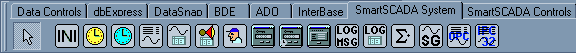
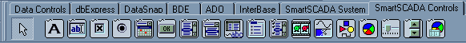

|
SmartSCADA programski alat za kreiranje upravljackog i nadzornog softvera
|
Autori:
Velibor Iliæ,
ilicv@EUnet.rs
Jovan Mirilovic
ABSTRAKT: U radu se govori o postupku izrade nadzornih i upravljaèkih programa upotrebom SmartSCADA
programskog alata; sa primerom primene u NIS Naftagas Novi Sad.
KLJUÈNE REÈI: procesno upravljanje, nadzorni sistemi, OOP (Object Oriented Programming), OPC (Ole for Process
Control), ActiveX, baze podataka, client/server, Delphi
Title: SmartSCADA programming tool for development control and monitoring software
Abstract: This text describes SmartSCADA programming tool for development control and monitoring software.
Key words: process control, data acquisition, OOP (Object Oriented Programming), OPC (Ole for Process Control), ActiveX, database, client/server, Delphi
Rad je prezentovan na seminaru “Primena informatièkih tehnologija u industriji nafte i gasa” JUNG info
Datum izrade: Novembar, 2001.
Uvod
Organizacija SmartSCADE
Komponente SmartSCADE
Otvorenost sistema
Zakljuèak
Literatura
Razvoj savremenih objektno orijentisanih programskih jezika u WINDOWS okruženju, sa moguænošæu vizuelnog programiranja pomoæu komponenti, omoguæio je enormno ubrzanje u kreiranju programa raznih namena. Naroèito se razvio deo koji se odnosi na upravljanje bazama podataka. Danas se na tržištu može naæi više softverskih paketa koji pružaju moguænost vizuelnog razvoja aplikacija kao što su Borland Delphi, Borland C++ Builder, Microsoft Visual Studio (Visual C++, Visual Basic), Microsoft Access i drugi.
Ovi programski paketi se odlikuju velikom brzinom izrade aplikacija (RAD, Rapid Application Develop). Programi se u njima kreiraju postavljanjem i povezivanjem softverskih komponenti u celinu, poput slaganja LEGO kockica. Da bi se moglo na ovaj naèin programirati, ovi programski paketi moraju da imaju niz predefinisanih komponenti, formi i èarobnjaka (wizard) za razne delove programa.
Danas na tržištu postoji veliki broj nezavisnih proizvoðaèa softverskih komponenti za razne namene, pa tako i za razvoj SCADA aplikacija. Meðutim, veæina njih obuhvata samo pojedine elemente jednog SCADA sistema.
SmartSCADA predstavlja nadogradnju (sistem softverskih komponenti) za razvojno okruženje DELPHI i C++ Builder, kompanije Borland, koje omoguæava ovim razvojnim sistemima da postanu sistemi za razvoj SCADA aplikacija, zadržavajuæi jednostavnost i brzinu kreiranja aplikacija.
Sistem komponenti, SmartSCADA, smo kreirali iz sledeæih razloga:
- Brzina izrade aplikacije. Uvek postoji vremensko ogranièenje, odnosno rok do kada aplikacija mora da se završi i proveri
u praksi.
- Veliki dijapazon zahteva korisnika aplikacija.
- Nedovoljna definisanost projekata i èesto nejasni ciljevi. Što kasnije dovodi do izmena u softveru, pa i hardveru.
- Primena standardnih objektno orjentisanih programskih jezika, DELPHI ili C++ Builder.
- Moguænost izrade aplikacija sa minimumom koda, èime se drastièno poveæava stabilnost softvera.
- Standardan interfejs za komunikaciju prema razlièitim hardverskim ureðajima i raznim softverima.
- Niža cena krajnje aplikacije jer se ne koristi Run Time modul, veæ je proizvod aplikacija u izvršnom kodu (EXE).
Zahtevi nadzorno/upravljaèkih sistema koje pokriva SmartSCADA su:
- Komuniciranje sa signalima iz realnog sveta.
- Alarmiranje nedozvoljenih stanja signala.
- Konverzija vrednosti signala iz sirovih u inženjerske i obrnuto.
- Arhiviranje podataka stanja signala.
- Prikaz trenutnih vrednosti signala na razlièite naèine.
- Prikaz arhiviranih vrednosti signala na razlièite naèine.
- Menjanje vrednosti signala, radi upravljanja procesima.
- Kreiranje raznih izveštaja, kako standardnih tako i nestandardnih.
Komponente koje se upotrebljavaju u SmartSCADI, mogu se podeliti na vizuelne (preko kojih se prikazuje situacija nadgledanog sistema MMI) i nevizuelne komponente koje omoguæavaju oèitavanje i obradu signala iz realnog sveta.
SmartSCADA komponente su dizajnirane tako da se odreðene metode objekata automatski izvršavaju bez posebnog programiranja. Na primer, komponenta TAlarmHandler konstantno nadgleda signale koji se nalaze u sistemu i ukoliko neki od signala prekoraèi dozvoljeni opseg vrednosti, komponenta automatski prikazuje na ekranu poruku o alarmu sa prateæim zvuènim signalom i u bazu podataka upisuje datum/vreme pojave alarma, opis i nivo alarma.
Prenošenje stanja nekog signala na bilo koju vizuelnu ili nevizuelnu komponentu se obavlja prostim povezivanjem osobina jedne komponente sa signalom, što se ostvaruje u vreme dizajniranja aplikacije.

Slika 1 – Izgled jedne gotove aplikacije
na objektu NIS-NAFTAGAS-a
Komponente SmartSCADE su podeljene na dve palete komponenti, Process System na kojoj se nalaze sistemske nevizuelne komponente, i Process Signal Controls na kojoj se nalaze vizuelne komponente.

Slika 2 - Paleta Process System

Slika 3 - Paleta Process Signal Controls
DEKLARACIJA I OBRADA SIGNALA
Osnovu sistema SmartSCADA predstavljaju nevizuelne komponente, signali razlièitog tipa (TFloatSignal, TBooleanSignal, TIntegerSignal, TDateTimeSignal i TStringSignal). Upravljanje signalima se vrši pomoæu komponente TSignalCollection. Komponenta omoguæava kreiranje, brisanje i podešavanje signala.
Signalne komponente su izraðene u skladu sa standardom OPC DA 2.04. Osnovne osobine (property) signala su:
- TagName: tehnološki naziv.
- Description: opis osnovnih funkcija.
- AditionalProperties: dodatni skup osobina koje korisnik može naknadno definisati.
- IniFile: odreðuje u koji ini fajl æe biti snimljene osobine signala.
- TimeStamp: opisuje vreme izmeðu dva osvežavanja stanja signala.
- RawDataType: tip sirovih podataka koji se dobijaju sa upravljaèkih sistema.
- Alarms: skup osobina koje opisuju alarmna stanja.
- ConvertProperties: skup osobina koje opisuju konverziju iz sirovih u inženjerske jedinice i obrnuto.
Osim navedenih osnovnih osobina svaki od tipova signala ima i svoje specifiène osobine.
Osobine signala se mogu obraðivati i menjati pomoæu standardnih editora (ObjectInspector) ili specijalizovanih editora kako za vreme dizajniranja, tako i za vreme izvršavanja izraðenih aplikacija.
Specijalizovani editori se koriste prilikom izrade programa (dizajniranja) i omoguæavaju grupno podešavanje signala u aplikaciji. Kreirani su sledeæi editori:
| Signals Editor |
omoguæava kreiranje, brisanje i konfigurisanje signala koji se upotrebljavaju u sistemu. Editori koji se opisuju u ostatku teksta pozivaju se pomoæu dugmiæa koji se mogu videti na gornjem delu editora. |
| Link editor |
prikazuje listu svih signala i komponenti na koje se ti signali mogu vezati. Omoguæava povezivanje komponenti upotrebom
drag and drop tehnike (prevlaèenjem mišem). |
| Ini editor |
povezuje signale sa ini komponentom i na taj naèin se vrednost signala automatski snima i uèitava iz ini fajla. Kada je signal povezan na Ini komponentu prilikom uèitavanja programa dobija vrednost kakvu je imao pre zatvaranja aplikacije. |
| Alarm Editor |
omoguæava grupno podešavanje alarma (alarmnih nivoa, alarmnih poruka, zvukova koji se javljaju u sluèaju alarmnih situacija i prioritet alarma). |
| Convert Editor |
pomoæu ovog editora se podešava tip i parametri konverzije signala (sirov signal u inženjerske jedinice i obrnuto). |
| Active Editor |
u ovom editoru se podešava stanje signala (da li su aktivni ili ne). |
| Description Editor |
omoguæava upisivanje komentara za svaki signal (funkcija signala, tip, gde je povezan u realnom sistemu i drugi bitni komentari vezani za odreðeni signal). |
| Aditional Properti Editor |
predstavlja editor pomoæu koga se mogu dodavati dodatne osobine signala prema specifiènim zahtevima korisnika. |
Prikaz i podešavanje vrednosti analognih signala
Komponente koje omoguæavaju prikaz i promenu vrednosti signala su u obliku prekidaèa, klizaèa, progres barova i mernih instrumenata.
Vizualizacija procesa
Grupa komponenata koja omoguæava vizuelno predstavljanje situacije u realnom procesu, ima sposobnosti za:
- Promenu boje objekta u nekom geometrijskom obliku (èetvorougao, krug, i sl.) u zavisnosti od stanja signala.
- Smenjivanje slika u zavisnosti od stanja signala.
- Pokretanje i zaustavljanje animacija.
Alarmni sistem
Komponente koje omoguæavaju detektovanje i evidenciju alarmnih situacija u sistemu kojim se upravlja. Realizovana komponenta detektuje promene digitalnih signala i analognih signala u željenom opsegu (sa razlikovanjem gornje i donje granice).
Kada doðe do alarmne situacije na ekranu se pojavljuje tekstualna poruka koja se beleži i u bazu podataka, što kasnije omoguæava generisanje izveštaja o pojavi alarmnih situacija u odreðenom
vremenskom periodu.
Bezbednosne komponente
Sistem komponenti koji omoguæava zaštitu pojedinih delova programa pomoæu lozinki. Pored zaštitne uloge, sistem komponenti omoguæava praæenje upotrebe procesne aplikacije (startovanje i zatvaranje programa, podešavanje parametara, generisanje izveštaja). Svaka promena operatera (unos nove lozinke) se beleži u bazu podataka tako da se lako može utvrditi koji operater je bio prisutan kada se vršila izmena parametara sistema ili kada se dogodila alarmna situacija u nadgledanom sistemu. Komponente se mogu podesiti tako da se dijalog za unos lozinke pojavi u taèno odreðeno vreme (evidentiranje promene operatera prilikom promene smene).
Praæenja eksternih dogaðaja sa procesnog raèunara
Pomoæu skupa ovih komponenti se prate promene stanja signala iz realnog sistema. Pojava ovakvih signala ne predstavlja alarmnu situaciju ali je bitno evidentirati da su se dogodili i kada su se dogodili (na primer, puštanje u rad nekog motora).
Praæenje promene vrednosti analognih signala
TSignalRecoder je komponenta na koju se vezuju analogni signali èije vrednosti želimo da pratimo radi kasnije obrade. Ima osobinu da automatski kreira sva potrebna polja u bazi sa imenima analognih signala koji su vezani za nju. Može se podesiti period snimanja vrednosti signala u bazu, velièina baze (konstantan broj recorda), da li se popunjava sa test podacima za vreme dizajniranja programa.
Generisanje izveštaja
Izveštaji mogu biti grafièki ili tabelarni, i uglavnom se generišu iz baza podataka. Izveštaji se mogu prilagoditi potrebama krajnjeg korisnika. Izveštaji se prikazuju u vremenskom periodu po izboru korisnika. Neki od moguæih izveštaja koji se mogu dobiti su:
- Izveštaj o alarmima.
- Izveštaj o dogaðajima u realnom sistemu.
- Izveštaj o upotrebi procesne aplikacije (startovanje i izlasci iz programa i podešavanje osetljivih delova programa).
- Tabelarni izveštaj o promeni analognih signala (temperature, pritisci, nivoi).
Pored standardnih izveštaja moguæe je kreirati specifiène grafièke izveštaje kao što je:
Grafièki izveštaj koji vadi podatke iz baze AnalogRecorderTable, a može da prikazuje i trenutne vrednosti iz tih merenih velièina:
Signali u sistemu SmartSCADA sistemski su kreirani tako da sadrže editor kojim se omoguæava podešavanje sistema bez izmena u izvornom kodu i kompajliranja krajnje aplikacije. Editor se poziva pomoæu PopUp menija bilo koje od vizuelnih komponenti na koju je vezan dati signal. Omoguæeno je grupno konfigurisanje više signala pozivanjem Edit metode u komponenti TSignalCollection. Naravno, programer koji kreira SCADA aplikaciju ima moguænost da zaštiti šifrom ili potpuno onemoguæi konfigurisanje vrednosti programa u krajnjoj aplikaciji.
Editor je kreiran po uzoru na ObjectInspector iz programskog okruženja Delphi. Radi preglednosti, parametri koji se mogu podešavati su podeljeni na grupe (standardni, za konverziju, alarmni, dodatni). Ukoliko se pozove editor za analogni signal može se prikazati i grafikon na kome se vidi promena vrednosti signala u vremenu.
Sistem izrade SCADA softvera preko specijalizovanih objekata (komponenti) u standardnim objektno orjentisanim jezicima se, po lakoæi upotrebe i brzini izrade softvera, približio gotovim paketima za izradu SCADA. Sve veæi broj proizvoðaèa procesnih (PLC) raèunara, isporuèuje drajvere za OPC servere za komunikaciju sa svojim ureðajima. Na taj naèin se sve više širi upotrebna vrednost softverskog paketa za izradu SCADA softvera prikazanog u ovom radu.
SmartSCADA komponente za Delphi 6
postavljeno za download 22.12.2001.
zadnja izmena 22.01.2002.
Download!!!
SmartSCADA V1.0 (SmartSCADA.zip 676Kb)
https://www.dropbox.com/s/cspphdqodr4jnyq/SmartSCADA.zip?dl=0
SmartSCADA primeri
postavljeno za download 22.12.2001.
zadnja izmena 22.01.2002.
Download!!!
SmartSCADA primeri (examples.zip 165Kb)
https://www.dropbox.com/s/poanxdfgjytfhcq/SCADAexamples.zip?dl=0
[1] Miriloviæ, J., Iliæ, V., (2001), “Izrada upravljaèkog i nadzornog softvera upotrebom objektno orijentisanih programskih
jezika”, II Seminar Automatike, AUP 2000, Banja Koviljaèa.
[2] “OPC/Open Control”, OCSTechnical.pdf, http://www.opctoolkit.com,
[3] “Ole for Process Control - Data Access Automation Interface Standard”, Version 2.1, OPC_20_Automation_Interface.pdf,
January 1999
[4] Saviæ, D., (1992): “Uvod u objektno programiranje”, PC Program, Beograd
[5] Yao. P., Leinecker, C. R., (1995): “Visual C++ 5 Biblija”, Mikro Knjiga, Beograd
[6] Papeš, I., (1990): “Turbo Paskal 5.5”, Nauèna Knjiga, Beograd
[7] Hansen, A., (1991): “Programiranje na jeziku C”, Mirko Knjiga, Beograd
[8] Stajiæ, D., Bilinski, P., (1991): “Raèunarske telekomunikacije i mreže”, Tehnièka Knjiga, Beograd
[9] Stojiæ, M., (1978): “Kontinualni sistemi automatskog upravljanja”
[10] Cantu, M., (2000): “Delphi 5, Detaljan Izvornik”, Kompjuter biblioteka, Èaèak
[11] Borland, (1992):"Programers reference"
[12] Borland, (1992):"Languge guide"
|